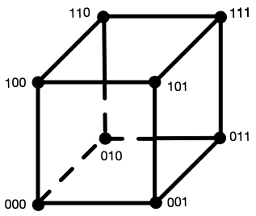
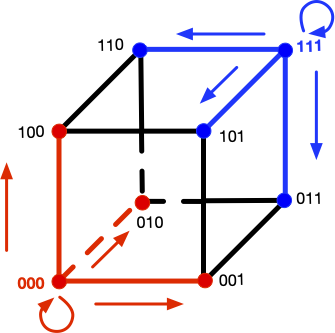

EE274 (Fall 25): Homework-3
- Focus area: Context-based compression and LZ77
- Due Date: Nov 11, midnight (11:59 PM)
- Weightage: 15%
- Total Points: 150
Q1 LZ77 compression for small data (35 points)
In this problem, we will understand how LZ77 compression performs on small files and how to improve its performance. Recall that the LZ77 algorithm looks for matches in a window storing the previously seen data and then encodes the match lengths, match offsets and unmatched characters (literals). We use the LZ77 implementation provided in SCL for the experiments below, and you can take a look at the code here to understand the details better. We have provided a set of small json files in the p1_data/github_data directory. Run the script python hw3_p1.py -i p1_data/github_data in scl/HWs/HW3 folder, which produces the following output:
Compressing without using a seed input
Number of files: 134
Total uncompressed size (in bits): 956272
Normalized uncompressed size (in avg. bits/file): 7136
Total size after compressing the files individually (in bits): 363774
Total size after compressing the files jointly (in bits): 71795
Ignore the first line for a moment. We see that we have 134 relatively small files with average size of 7136 bits. If we compress the files individually and then sum the sizes, we get a total of 363774 bits, whereas if we concatenate the files and then compress them as a single block ("jointly") the compressed size is just 71795 bits!
-
[4 points] Give two reasons why concatenating the files together provides a reduction in file size.
HINT: One of the reasons is applicable even if the files were from completely distinct sources and had no similarity whatsoever.
Solution
- The first reason is that the LZ77 algorithm works best if it can find longer matches within the past symbols in a file. If we concatenate the files, then the LZ77 algorithm will be able to find longer matches within the concatenated file compared to the original small file.
- The second reason is that now we have increased the block size for LZ77, and thus the LZ77 algorithm will be able to converge closer to the entropy (see Slide 29 in LZ77 slides). Another related reason is that compressed files have a bunch of overhead due to headers, etc. which gets amortized for larger files.
Ideally one would just combine these small files into bigger batches for the best compression. However, we sometimes need to store, transmit or compress small files. For example, we need to transmit short JSON messages/network packets between servers where latency is important, and we can't batch requests. Another common use case is when databases use small data pages for fast random access. Small files also show up when we are working with resource constrained devices that cannot hold large files.
To improve the compression on small files, we consider a slight modification of the LZ77 algorithm we studied in class. Both the compressor and the decompressor now take an additional seed input, which is just a sequence of bytes. The idea is simple: instead of starting the LZ77 compressor with an empty window, we instead initialize the window with a seed input (and appropriately update the other indexing data structures). The same seed input should be used during compression and decompression to enable recovery.
The overall system architecture needs to maintain these seed inputs (which might be specific to particular data categories), and make sure the encoders and decoders can access these. The seed inputs are usually constrained to be small to avoid extra overhead.
We provide a sample seed input for the above dataset in p1_data/github_data_seed_input.txt. Run python hw3_p1.py -i p1_data/github_data -s p1_data/github_data_seed_input.txt to obtain the following:
Loading seed input from p1_data/github_data_seed_input.txt
Number of files: 134
Total uncompressed size (in bits): 956272
Normalized uncompressed size (in avg. bits/file): 7136
Total size after compressing the files individually (in bits): 224738
Total size after compressing the files jointly (in bits): 70678
-
[6 points] We see a significant reduction in the total size for compressing the files individually (
363774bits to224738bits). Based on your understanding of the LZ77 algorithm and your answer toQ1.1, explain why this is the case. You might find it useful to look both at the json files inp1_data/github_data/and the seed input inp1_data/github_data_seed_input.txt.Solution
Seed file consists of data which is similar to the input files. Thus, LZ77 algorithm is able to find more matches in the seed file while compressing the individual files resulting in better compression of the individual files better.
-
[2 points] Why is the impact of using the seed input negligible when we compress the files jointly?
Solution Since the concatenated file already consists of the data present in individual files, adding a seed file with similar data as the individual files does not help in finding significantly more matches. Therefore, we get negligible benefit on using the seed file when we compress the files jointly. We might get some benefit for the initial part of the concatenated file, but for most later parts the benefit is minimal.
-
[3 points] The provided seed input file is less than 1 KB in size. If you were allowed to choose an arbitrarily large seed input, how might you design it to minimize the compressed size for this specific dataset.
HINT: Think about the best case scenario for LZ77 parsing - longest possible matches and no literals.
Solution
Concatenating all files and using them as a seed file can be a good choice. This will result in the LZ77 algorithm finding the longest possible matches and no literals. Thus, we will get the best possible compression.
-
[10 points] Now you will create a seed input for another dataset provided in the
p1_data/pokemon_datadirectory. We will evaluate your submissions on a test dataset which has similar files as thep1_data/pokemon_datadirectory. Your submission should satisfy the following:- name the seed input file as
p1_data/pokemon_data_seed_input.txt - the seed input file should be less than 1 KB (1000 B) large. You can check the file size in bytes by running
wc -c p1_data/pokemon_data_seed_input.txt. - the total size for compressing the files individually should reduce to at least 2x when using the seed input (vs. when not using a seed input) for both the
pokemon_dataset and the autograder submission. For example, if theTotal size after compressing the files individuallyis308031 bitswithout seed input, then with your seed input it should be at most154015 bits. - A couple hints to help you achieve best results: (i) try to use similar JSON format and formatting in your seed input file as in the pokemon data files - this includes using the same 2-space indendation, and (ii) (for Windows users) make sure your seed input uses LF (
\n) line-endings and not CRLF (\r\n) - verify your editor is not changing this automatically.
Solution
The seed file we used can be found at
p1_data/pokemon_data_seed_input.txt. The total size for compressing the files individually reduces by when using the seed input for both thepokemon_dataset and the autograder submission. - name the seed input file as
-
[10 points] Christmas is approaching and Jim knows that Della is going to buy a thoughtful gift for him. Unable to control his curiosity and being a part-time hacker, he has decided to spy on Della’s internet search patterns by executing a side-channel attack. As shown in the diagram below, he is able to inject strings into Della’s http requests, and once Della makes a search request he can monitor the LZ77 compressed size of the response. Here the response includes his injected string along with the gift description, allowing him to infer some side-channel information about the search. Don't take the story too seriously from a internet security standpoint! But do take a look at the references provided in the note below to learn more about real instances of such attacks.
Use the provided webpage to help Jim select injected strings and based on that make a guess about the chosen gift. Include a screenshot of the injected strings you used and the “🎉 Correct!” message.
Solution The idea is to use injected strings that are substrings (e.g., a sentence) of the gift descriptions. By monitoring the compressed sizes for different injected strings, we can infer which gift description is most likely.
Note:
- To learn more about small data compression using seed inputs and how it is used in practice, you can have a look at Yann Collet's IT-forum talk (Part 1, Part 2).
- zstd uses the term "dictionary" to refer to what we called seed inputs above.
- To read more about LZ77 side-channel attacks mentioned in part 6, you can refer to the slides here or Fall 2023 course project report here.
Q2: Burrows Wheeler Transform and compression (50 points)
DISCLAIMER: This problem looks longer but is actually simpler :P
You might be familiar with Fourier transforms, DCT transform, wavelet transform, etc. for images and audio signals. These transforms are widely used as they are invertible and make the data easier to analyse, compress, etc.
In this problem, we will learn about a few lossless transforms for textual data, which have been used for various applications, including data compression.
I. The BWT algorithm:
In 1994, David Wheeler and Michael Burrows discovered (co-incidentally at the DEC Research Labs in Palo Alto!) an invertible transform for textual data, which supposedly made the data easier to compress. In this question, we will learn more about the BWT algorithm and its properties.
The BWT forward transform works the following way:
-
STEP-I
Let's say you are given a sequence
BANANA. The first thing you do is add a delimiter~to the end. Thus, our new sequence is now:BANANA~. Note that the delimiter is a unique character we are sure never occurs in the input sequence, and is useful to mark the ending of our sequence -
STEP-II
In the next step, we form all cyclic rotations of the word
BANANA~. As the sequence length isn=7, we will have7such rotations.Input string: BANANA # all cyclic rotations BANANA~ ~BANANA A~BANAN NA~BANA ANA~BAN NANA~BA ANANA~B -
STEP-III
Sort these strings lexico-graphically. This results in
npermutations of a string of lengthnresulting in an X n2D table — called a Burrows Wheeler's Matrix (BWM). The7 X 7BWM for our example is shown below:# sorted strings ANANA~B ANA~BAN A~BANAN BANANA~ NANA~BA NA~BANA ~BANANA -
STEP-IV
Now consider the string formed by last letters of the sorted strings. This new string is the BWT transform of the input!
BANANA -> BNN~AAA
-
[5 points] Here are some other examples of BWT:
BANANA -> BNN~AAA abracadabraabracadabraabracadabra -> rrdd~aadrrrcccraaaaaaaaaaaabbbbbba hakunamatata -> hnmtt~aauaakaNotice that the BWT forward transform of
x_input = BANANA -> BNN~AAAhas the letters ofBANANA~permuted, i.e.BWT(x_input)is just reordering the letters in the input in a particular way. Justify in a few lines whyBWT(x_input)is a permutation of the stringx_input~(x_input~->x_inputconcatenated with the delimiter~).Solution Since we are taking circular rotations of the string, each character of the string
x_input~will be present in the last column of list of strings (output of Step-II). Sorting this list of strings only changes the order of the last characters (output of Step-I). Thus,BWT(x_input)is a permutation of the stringx_input~. -
[5 points] Manually compute and show the BWT transform for
PANAMA, using the method above. Show your work to get credit (that is you can't just write the final transform but show the steps described above).Solution:
- Step-II: calculate cyclic rotations of
PANAMA~
Input string: PANAMA~ # all cyclic rotations PANAMA~ ~PANAMA A~PANAM MA~PANA AMA~PAN NAMA~PA ANAMA~P- STEP-III: Sort these strings lexico-graphically.
# sorted strings AMA~PAN ANAMA~P A~PANAM MA~PANA NAMA~PA PANAMA~ ~PANAMA- Step-IV: BWT forward transform is last letters of the sorted strings.
Therefore, BWT forward transform of
PANAMAisNPMAA~A - Step-II: calculate cyclic rotations of
-
[10 points] Implement the BWT (forward) transform in the
hw3_p2.pyfile,BurrowsWheelerTransform::forwardfunction. Remember to add a delimiter in the input string (you can use~as delimiter as~has the highest ascii value). You may use thetest_bwt_transform()(by commenting out the inverse bwt part) to test your implementation. What is the time complexity of your BWT forward transform implementation for an input of lengthn?Solution
def forward(self, data_block: DataBlock): """ Generates the forward transform of BWT NOTE: for consistency all forward and inverse functions take in as input a DataBlock """ # create a string using data_block input_block_str = "".join(data_block.data_list) ############################################### # ADD DETAILS HERE # to generate bwt_str (BWT transformed string) # Note: remember to add the delimiter to the string! ############################################### bwt_str = "" # STEP-1: add a delimiter input_block_str += self.delimiter # STEP-2: get all cyclic rotations, and sort N = len(input_block_str) cyclic_rotations = [] cur_str = input_block_str for _ in range(N): cur_str = cur_str[-1] + cur_str[:-1] cyclic_rotations.append(cur_str) cyclic_rotations.sort() # STEP-3: pick the last column and make a single string bwt_str = "".join([rot_str[-1] for rot_str in cyclic_rotations]) ############################################### data_bwt_block = DataBlock(list(bwt_str)) return data_bwt_blockThe forward transform involves creating a -length list of length strings, followed by sorting the length strings. Assuming sorting is comparisons and each comparison is (since we are working with -length strings), the overall complexity will be .
II. The Inverse BWT Algorithm
The surprising part is that BWT is actually a fully invertible transform, i.e. we can fully retrieve back the original input from the BWT transform e.g. we can recover input string BANANA~ from the BWT transform BNN~AAA. The inverse transform works by retrieving the Burrows Wheeler Matrix (BWM) one column at a time. The inverse BWT proceeds in the following way:
-
In the beginning we only have the BWT transform which is the last column of the BWM. We show the BWT transform and the BWM below.
# STEP-0 ------B ------N ------N ------~ ------A ------A ------A -
Notice that each column is a permutation of
BANANA~. As the rows of BWM are lexicographically sorted, we can retrieve the first column on BWM by sorting the last column.# STEP-1 A-----B A-----N A-----N B-----~ N-----A N-----A ~-----A -
Due to the cyclic rotations which we used to form the BWM, we can now copy over the last column to the beginning, and we have the first two letters for each row of BWM (although in the incorrect order). We can sort these rows to get the first two columns of the BWM.
# STEP-2 A-----B -> BA----- AN----- A-----N -> NA----- AN----- A-----N -> NA----- A~----- B-----~ -> ~B----- ===> SORT ===> BA----- N-----A -> AN----- NA----- N-----A -> AN----- NA----- ~-----A -> A~----- ~B----- -
We can now repeat the procedure, since we know the last column is the BWT transformed string:
# STEP 1,2 (repeated) AN----B -> BAN---- ANA---- AN----N -> NAN---- ANA---- A~----N -> NA~---- A~B---- BA----~ -> ~BA---- ===> SORT ===> BAN---- NA----A -> ANA---- NAN---- NA----A -> ANA---- NA~---- ~B----A -> A~B---- ~BA---- -
Continuing, this way, we can retrieve the full BWM, and then just pick the row which ends with
~# BWM ANANA~B ANA~BAN A~BANAN BANANA~ ===> BANANA~ ---> :D NANA~BA NA~BANA ~BANANA
-
[5 points] Manually compute the inverse of
TGCA~AA. Show your work to get credit (that is you can't just write the final inverse transform but show the steps described above).Solution
We fill in the BWM matrix as described above.
-
STEP-0:
# STEP-0 ------T ------G ------C ------A ------~ ------A ------A -
STEP-1:
A-----T A-----G A-----C C-----A G-----~ T-----A ~-----A -
STEP-2:
A-----T -> TA----- AC----- A-----G -> GA----- AT----- A-----C -> CA----- A~----- C-----A -> AC----- ===> SORT ===> CA----- G-----~ -> ~G----- GA----- T-----A -> AT----- TA----- ~-----A -> A~----- ~G----- -
Repeating steps 1-2 above we get:
# STEP 1,2 (repeated) ACA~GAT ATACA~G A~GATAC CA~GATA GATACA~ TACA~GA ~GATACA
Therefore, the inverse-BWT of
TGCA~AAisGATACA. -
-
[10 points] Implement the BWT inverse transform in
hw3_p2.pyin theBurrowsWheelerTransform::inversefunction. Please add (some) inline comments describing your algorithm. What is the time, memory complexity of your BWT inverse transform implementation for an input of lengthn?Solution
def inverse(self, bwt_block: DataBlock): """ Generates the inverse of the BWT. NOTE: for consistency all forward and inverse functions take in as input a DataBlock """ bwt_block_str = "".join(bwt_block.data_list) N = len(bwt_block_str) ############################################### # ADD DETAILS HERE # to generate output_str # Note: remember to remove the delimiter from the string! ############################################### output_str = "" # decoding loop bwm_list = ["" for i in range(N)] for _ in range(N): bwm_list = [bwt_block_str[i] + bwm_list[i] for i in range(N)] bwm_list.sort() # find the string which ends with delimiter output_str = "" for _str in bwm_list: if _str.endswith(self.delimiter): output_str = _str break # strip the delimiter and return the input output_str = output_str.strip(self.delimiter) ############################################### return DataBlock(list(output_str))The reverse transform involves sorting operations, each applied on strings of length . Each sort operation has complexity because we operate with length strings. Thus the overall time complexity is .
The memory complexity is because we need to store the matrix.
-
[5 points] Notice that the BWT forward transform of typical english language words/sentences have lots of consecutive repeated letters. For example:
# BWT forward transforms of some english words BANANA -> BNN~AAA abracadabraabracadabraabracadabra -> rrdd~aadrrrcccraaaaaaaaaaaabbbbbba hakunamatata -> hnmtt~aauaaka # first 300 letters of sherlock novel The Project Gutenberg eBook of The Hound of the Baskervilles, by Arthur Conan DoyleThis eBook is for the use of anyone anywhere in the United States andmost other parts of the world at no cost and with almost no restrictionswhatsoever. You may copy it, give it away or re-use it under the termsof the --> yernteedfe.htsfedt,yosgs,ekeeyuttkedsytrroefnrrfftedester ee ~e n pB th mwn eielnnnnhhhhnrvsshhhr ljtthdvhbtktlrohooooo r twtTTtttttwtTtrv th nwgooosrylia ldraioeuauaoU oaanns srooCyiBBc fwcmm YHD oueoeoee etoePAaeeiiteuuatmoooencsiassiiSiu ai o rcsraoo h- Gierasy bapaonneSo in a way BWT forward transform is approximately sorting the input strings. Can you think of why BWT has this property?
HINT: In the BWM, the last column forms the BWT while the first columns form suffixes of the last column. For example, if the last entry in a particular row is ( th value in original string), then the first entries in that row would be the cyclic suffix: Given the rows are sorted lexicographically, what can you say about the suffixes of nearby entries in the BWT?
Solution
As the hint suggests, the first rows of the BWM form cyclic suffixes of the last column. Since the first rows are sorted, this means the last column will consist of consecutive characters which share the same suffix. Since English has lots of repeated words, this results in lots of repeated letters in the last column of the cyclic BWM and hence in the BWT forward transform. For instance, consider a large english sentence with frequent occurrence of the word
the, sayArguably one of the most popular anime is One Piece. The characters, the arc, the manga illustrations are all amazing. The BWT forward transform on this sentence results in clustering of all the suffixes of every character in this string. This results intpresent in all occurrences of wordthebeing clustered together in the last column everytime there ishein the first two columns of BWM.... ... he most popular anime...t he characters, the ar...t he arc, the manga ill...t he manga illustration...t ... ...
III. Using BWT for compression
As we saw in previous part, BWT tends to club letters of the input string together. We will use this property to see if we can improve compression. To do this, we also implement another invertible transform called the Move to Front (MTF) transform. The Move To Front transform keeps a table of the symbols in the data, and moves the most recent symbol to the top of the table. The transform output is the index of the symbols in this changing table and thus the symbols that are more frequent in a local context get a lower index. The MTF forward and inverse transforms are already implemented and included in hw3_p2.py and are described quite well in the wikipedia article here: https://en.wikipedia.org/wiki/Move-to-front_transform.
Here are some sample outputs on applying MTF transform:
Input str: aaabbbaaacccaaa
MTF: [97, 0, 0, 98, 0, 0, 1, 0, 0, 99, 0, 0, 1, 0, 0]
Input str: rrdd~aadrrrcccraaaaaaaaaaaabbbbbba
MTF: [114, 0, 101, 0, 126, 100, 0, 2, 3, 0, 0, 102, 0, 0, 1, 3, 0, 0, 0, 0, 0, 0, 0, 0, 0, 0, 0, 102, 0, 0, 0, 0, 0, 1]
We use the BWT, MTF transforms to transform the first 50,000 characters (let's call this the input_data) of our sherlock novel and analyze the entropy of the empirical distribution of the transformed string. (this output can be obtained by running the test test_bwt_mtf_entropy if you are curious!). The output obtained is as below:
Input data: 0-order Empirical Entropy: 4.1322
Input data + BWT: 0-order Empirical Entropy: 4.1325
Input data + MTF: 0-order Empirical Entropy: 4.6885
Input data + BWT + MTF: 0-order Empirical Entropy: 2.8649
-
[10 points] Let's try to understand the compression results above a bit better:
- Given a good implementation of an Arithmetic coder, what is approximate average codelength per symbol you might expect on compressing the
input_datausing its empirical 0-order distribution (i.e. just the symbol counts)? - Notice that the empirical entropy of
input_datais almost the same as that ofbwt_data = BWT(input_data). In fact the empirical entropy ofbwt_datais slightly higher than that ofinput_data(4.1325 vs 4.1322). Justify why is this the case. - Notice that empirical entropy of
mtf_bwt_data = MTF(BWT(input_data))is much lower than that of theinput_data(2.8649vs4.1322). Can you think of why this is the case? - Based on the numbers you have, describe a compression scheme which achieves average codelength of approximately
~2.87 bits/symbolon theinput_data. You don't need to implement this compressor, but ensure you clearly describe the steps involved in encoding and decoding. You are free to use any compressors you have learnt in the class.
Feel free to experiment with the test functions, to print transformed data or to build better intuition with custom examples. Please include any relevant outputs in your submission which you found useful to answer these questions.
Solution
- The average codelength will be approximately
4.1322bits per symbol as Arithmetic coder is a lossless compression algorithm which can compress to entropy. - Since BWT only permutes the characters in a string (
Q5.1), the frequency count to 0th order is still the same for the input and the BWT transformed data. In-fact, we add a character to the list of characters in input string during the BWT transform: the delimiter character~. Hence, the entropy ofinput_dataandbwt_datais such that . - As seen in
Q2.5andQ2.6, BWT forward transform results in repeating characters which are present in frequent words or group of words because of sorting along suffixes. Since MTF symbol reduces the locally most frequent symbols to lower indices, the MTF transform on BWT transformed data results in a string with lower entropy. - We can use BWT followed by MTF and finally Arithmetic coding to achieve the desired average codelength. The steps involved in encoding and decoding are as follows:
- BWT transform the input data.
- MTF transform the BWT transformed data.
- Encode the MTF transformed data using Arithmetic coding.
- Decode the Arithmetic coded data.
- Inverse MTF transform the decoded data.
- Inverse BWT transform the MTF transformed data.
- Given a good implementation of an Arithmetic coder, what is approximate average codelength per symbol you might expect on compressing the
NOTE: compressors such as bzip2, and bsc in fact use BWT and MTF transforms along with a few other tricks to obtain great compression. BWT algorithms have also found another surprising use: they allow efficient searching over compressed text! Here are more references in case you are interested:
- bzip2, bsc
- wikipedia article: https://en.wikipedia.org/wiki/Burrows%E2%80%93Wheeler_transform
- BWT for searching over compressed text: slides
Q3: Compression with side information (20 points)
Let's consider a simple puzzle:
- Let be a 3 bit random variable where each bit is i.i.d , i.e. is uniformly distributed in with probability ,
- and , where and is independent of . The distribution of is unknown, i.e. can be different from in at most one bit position. Recall that is the bitwise-XOR operation.
-
[5 points] Show that .
HINT: Consider and write it in two different ways
Solution
For computing , let's consider in two different ways as suggested in the Hint:
since and thus is a function of and implying from
Q1.1. Similarly, we can write as:where again since is a function of and , therefore from
Q1.1. Inequality follows from conditioning inequality and since is uniformly distributed in with probability . -
[5 points] Kakashi wants to losslessly encode and send the encoded coderword to Sasuke. What is the optimal compression scheme for Kakashi?
Solution
Kakashi needs 3 bits to encode since . Kakashi can just send as is to Sasuke as none-of-the-lossless encoder can do better than this.
-
[5 points] Now let's say both Kakashi and Sasuke have access to , i.e. is the side-information available to both Kakashi and Sasuke (through side-information ninjutsu :P). In that case, show that Kakashi can do better than in
Q3.2, by using2 bitsto transmit .Solution
Now since the entropy of , Kakashi should be able to get away by just transmitting 2 bits instead. The hint is in the derivation of in
Q3.3. Since both Kakashi and Sasuke has access to both and , Kakashi can just transmit , and Sasuke can recover from by . We need 2 bits to encode , e.g. by using the following scheme:
| e | 2-bit encoding |
|-----|----------------|
| 000 | 00 |
| 001 | 01 |
| 010 | 10 |
| 100 | 11 |
-
[5 points] Unfortunately Kakashi lost access to , and only knows but Sasuke still has access to the side information . Show that in this case Kakashi can still losslessly encode and send it to Sasuke using
2 bits, i.e. surprisingly we just need the side-information at the decoder, and not necessarily at the encoder.Solution This problem has a very elegant visualization by noticing that only has
1or0ones and thus flips at most one bit of (or hamming distance ). Let us represent on a unit cube where each axis represents one bit of
Now notice that flips at most one bit of and thus can be represented by a line segment on the unit cube. The following figure shows the possible values for (red) and (blue).

Note how these are distinct sets, hence if you knew and also knew that is either or , you are able to decode. Thus Kakashi can send using 2 bits by basically pairing symbols with hamming distance . For instace one possible encoding is:
| X | 2-bit encoding |
|------------|----------------|
| 000 or 111 | 00 |
| 001 or 110 | 01 |
| 010 or 101 | 10 |
| 100 or 011 | 11 |
NOTE: It is quite fascinating that we need side-information only at the decoder. This property can be generalized to more general scenarios, and is the foundation for distributed data compression. E.g. see Slepian-Wolf coding and Wyner-Ziv coding for more details.
Q4: kth order adaptive arithmetic coding (40 points)
Shubham wants to test the compression performance of the k-th order context models using Arithmetic Coding he has implemented. However, one problem is that for unknown sources it is very difficult to compute the fundamental limit on the average codelength. So, he decides to test his algorithms on a synthetic dataset.
He generates data using a noisy version of Linear Feedback Shift Register based Pseudorandom generator. The name sounds quite complicated, but it is a simple concept (you don't need to know anything about it to attempt this problem). The pseudocode to generate noisy-LFSR sequence is given below (also given in HW code hw3_p4.py):
def pseudo_random_LFSR_generator(data_size, tap, noise_prob=0):
# initial sequence = [1,0,0,0,...] of length tap
initial_sequence = [1] + [0] * (tap - 1)
# output sequence
output_sequence = list(initial_sequence)
for _ in range(data_size - tap):
s = output_sequence[-1] ^ output_sequence[-tap] # xor
if noise_prob > 0:
s = s ^ Bernoulli(p=noise_prob) # add noise
output_sequence.append(s)
return output_sequence
Our pseudo_random_LFSR_generator generates an output sequence of length data_size. At each step, it calculates the next bit using XOR (a ^ b is True/1 if exactly one of a and b is True/1) between the last bit in the sequence and the bit located tap positions before it (this simulates LFSR behavior). Optionally, if noise_prob is greater than 0, it adds noise to the calculated bit by XOR-ing it with a random binary value generated with a given probability (noise_prob). The calculated (possibly noisy) bit is appended to the sequence in each iteration. To initialize the sequence, we always start it with [1,0,0,0,...] so that we have tap number of bits available to calculate the next bit.
For concreteness let's take a specific parameter setting (function in hw3_p4.py):
pseudo_random_LFSR_generator(data_size=10000, tap=3, noise_prob=0)
We see that the first 12 symbols of the sequence looks like:
1, 0, 0, 1, 1, 1, 0, 1, 0, 0, 1, 1, ...
Notice that the sequence looks random-ish but starts repeating after 8 symbols. In fact if we look at the first 7 3-mers (substrings of length 3), i.e. 100, 001, ..., 010, then we see that they are all unique and do not repeat! The LFSR sequence with noise_prob=0, is in fact a simple pseudo-random generator used in the past. We will use this source to further our understanding of context based compression.
Let's start by defining the order empirical entropy of the sequence. Recall, if your sequence is , the -order empirical entropy of the sequence can be computed by making a joint and conditional probability distribution table using counts of the previously seen symbols (we saw this in class in L9 on context based AC lecture). Specifically, assuming the alphabet is , for any , we can define the empirical joint probability as:
the empirical conditional probability as:
and the -order empirical entropy is then given by summing over all possible -tuples:
-
[5 points] Show that for infinite data () and , i.e. -order empirical entropy is always less than (or equal to) -order empirical entropy.
You can assume the data distribution is stationary and ergodic (or in simple words you can assume the empirical probabilities converge to the stationary distribution).
Solution Given the convergence guarantees, we can assume that the empirical probabilities converge to the true probabilities. Now the -order empirical entropy can be written as .
Using stationarity, let's rewrite and (recall that ):
In class we learned that conditioning reduces entropy (i.e. ). We can clearly see above that has more conditioning variables than . Thus, by the conditioning reduces entropy property, we have
(NOT REQUIRED FOR GRADING)
If you look carefully, it doesn't seem immediately obvious that the conditioning reduces entropy property: you saw previously directly implies the result when another conditioning variable is added (i.e., ). As you see in our case, the corresponds to and the corresponds to . But it's easy enough to prove by first fixing and then applying the conditioning reduces entropy property on , and then averaging over .
(If you are curious) There are several ways to prove conditioning reduces entropy. The textbook Elements of Information Theory by Cover and Thomas has a proof in Chapter 2. That relies on the fact that and , therfore . An alternative proof, which uses Jensen's inequality can be found here, and proceeds as follows:
Of course, the positivity of mutual information is a consequence of the non-negativity of the Kullback-Leibler divergence, which is itself a consequence of Jensen's inequality.
-
[10 points] Next let's calculate for the above given sequence with
tap=3,noise_prob=0. (Recall the sequence from above:1, 0, 0, 1, 1, 1, 0, 1, 0, 0, 1, 1, ...)- Compute the order count-distribution and empirical entropy of the sequence. HINT: sequence repeats itself!
- Compute the order count-distribution and empirical entropy of the sequence.
- Finally, argue that for , the -order empirical entropy of the sequence is
0.
Solution
- Since the sequence repeats after 7 bits, the empirical probabilities are just given by their respective frequencies in the first 7 bits (i.e. and ).
- For , we have to consider all tuples of length 2 (i.e. ). Before the pattern repeats, we record the following frequency counts: . The total count of 2 tuples is 7. Thus, the empirical joint probabilities are given by . Marginalizing across these, we see that
Then, we have
- For , The conditional probabilities, are all 1 for the non-zero because the the th bit is completely determined by the preceeding
TAPbits, so whenTAP=3conditioning on the previous 3 bits is enough to give us complete information about the th bit. Of course, conditioning on more than the 3 previous bits won't hurt us since all we need for the th bit to be deterministic are the previous 3, so conditioning on will also do the trick. Thus, for .
-
[5 points] Now, Shubham decides to use Adaptive Arithmetic coding to compress data from this source. For the case with no added noise (
noise_prob=0), the number of bits/symbol we achieve is as follows for different context sizek. You can use the test code inhw3_p4.pyto generate these numbers by changing and choosing appropriate parameters. Use the-sflag in pytest to dump the output even for successful tests.---------- Data generated as: X[n] = X[n-1] ⊕ X[n-3] data_size=10000 AdaptiveArithmeticCoding, k=0, avg_codelen: 0.989 AdaptiveArithmeticCoding, k=1, avg_codelen: 0.969 AdaptiveArithmeticCoding, k=2, avg_codelen: 0.863 AdaptiveArithmeticCoding, k=3, avg_codelen: 0.012 AdaptiveArithmeticCoding, k=4, avg_codelen: 0.011 AdaptiveArithmeticCoding, k=7, avg_codelen: 0.011 AdaptiveArithmeticCoding, k=15, avg_codelen: 0.012 AdaptiveArithmeticCoding, k=22, avg_codelen: 0.013Argue why these results make sense. In particular, argue that Adaptive Arithmetic coding with order
k=0,1,2cannot do much better than1 bit/symbol. Also, argue that fork >= 3, the compression should be~0 bits/symbol.Solution From our answer to the previous part of the question, we see that the empirical entropy of the sequence is approximately 1 bit/symbol for
k=0,1. We expect the same fork=2since the th bit is completely determined by the bit locatedTAPindices earlier, so in the case ofTAP=3, the previous 2 bits don't really give us much predictive information. However, as we explained in our solution to the previous part of the question, the th bit is completely determined by the bit locatedTAPindcies earlier, so in the case ofTAP=3, the previous 3 bits give us complete information about the th bit. Thus, we expect the empirical entropy to be 0 bits/symbol fork >= 3. Assuming our Arithmetic coder is optimal, we expect the average codelength to be close to the empirical entropy, so fork=0,1,2we shouldn't be able to do much better than1 bit/symbol, and fork >= 3we should achieve close to0 bits/symbol.
Next, Shubham decides to encode noisy-LFSR sources with noise_prob=0.01 and TAP=3,7,15. The noisy LFSR is very similar to the non-noisy version, except we add a bit of noise after xoring the two past symbols as shown in the pseduo-code above.
-
[5 points] For
TAP=3, noise_prob=0.01, what is the fundamental limit to which you can compress this sequence, i.e. what is -order empirical entropy of the sequence for and large ?Solution Entropy is a measure of uncertainty. Let's think about where that uncertainty is coming from. We have seen above that for when there is no noise in the LFSR sequence, . Now however, we have added a Bernoulli random variable to the mix. Each bit has a
noise_probchance of being flipped. So given the past bits, the only remaining uncertainty is described via a Bernoulli random variable with probabilitynoise_prob. So the empirical entropy will just be the entropy of this Bernoulli random variable Thus, the -order empirical entropy of the sequence is . Fornoise_prob=0.01, this is approximately0.081 bits/symbol. -
[5 points] Next, we encode noisy-LFSR sequence with parameters
noise_prob=0.01andTAP=3,7,15using Adaptive Arithmetic coding. The number of bits/symbol we achieve is as follows for different context sizek. You can again use the test code inhw3_p4.pyto generate these numbers by changing and choosing appropriate parameters. In these cases we observe the following average codelength, for a sequence of length10000---------- Data generated as: X[n] = X[n-1] ⊕ X[n-3] ⊕ Bern_noise(0.01) DATA_SIZE=10000 AdaptiveArithmeticCoding, k=0, avg_codelen: 1.003 AdaptiveArithmeticCoding, k=1, avg_codelen: 1.002 AdaptiveArithmeticCoding, k=2, avg_codelen: 0.999 AdaptiveArithmeticCoding, k=3, avg_codelen: 0.087 AdaptiveArithmeticCoding, k=4, avg_codelen: 0.089 AdaptiveArithmeticCoding, k=7, avg_codelen: 0.097 AdaptiveArithmeticCoding, k=15, avg_codelen: 0.121 AdaptiveArithmeticCoding, k=22, avg_codelen: 0.146 AdaptiveArithmeticCoding, k=24, avg_codelen: 0.152 ---------- Data generated as: X[n] = X[n-1] ⊕ X[n-7] ⊕ Bern_noise(0.01) DATA_SIZE=10000 AdaptiveArithmeticCoding, k=0, avg_codelen: 1.004 AdaptiveArithmeticCoding, k=1, avg_codelen: 1.004 AdaptiveArithmeticCoding, k=2, avg_codelen: 1.005 AdaptiveArithmeticCoding, k=3, avg_codelen: 1.007 AdaptiveArithmeticCoding, k=4, avg_codelen: 1.009 AdaptiveArithmeticCoding, k=7, avg_codelen: 0.139 AdaptiveArithmeticCoding, k=15, avg_codelen: 0.192 AdaptiveArithmeticCoding, k=22, avg_codelen: 0.240 AdaptiveArithmeticCoding, k=24, avg_codelen: 0.254 ---------- Data generated as: X[n] = X[n-1] ⊕ X[n-15] ⊕ Bern_noise(0.01) DATA_SIZE=10000 AdaptiveArithmeticCoding, k=0, avg_codelen: 1.004 AdaptiveArithmeticCoding, k=1, avg_codelen: 1.004 AdaptiveArithmeticCoding, k=2, avg_codelen: 1.005 AdaptiveArithmeticCoding, k=3, avg_codelen: 1.006 AdaptiveArithmeticCoding, k=4, avg_codelen: 1.008 AdaptiveArithmeticCoding, k=7, avg_codelen: 1.031 AdaptiveArithmeticCoding, k=15, avg_codelen: 0.949 AdaptiveArithmeticCoding, k=22, avg_codelen: 0.955 AdaptiveArithmeticCoding, k=24, avg_codelen: 0.957Notice that the average codelength for
TAP=3,7is at its minima fork=TAPvalue and then increases as we further increasekwhich seems to suggest the result we saw inQ4.1is wrong. Argue:- Why do these results still make sense and do not contradict theory?
- For
TAP=15, even for context sizek=15, why is the model not able to compress the data very well?
Solution
- In this case, the conditional empirical entropy for infinite data will be around 1 bit/symbol for
kless thanTAPand the binary entropy ofnoise_probforkgreater thanTAP. However in practice for finite data, you might not achieve the empirical entropy for infinite data since you will not get enough counts for each context, especially at higherk. The minor increase for higherkis due to the fact that we are using a finite length sequence, so the empirical probabilities are not exactly equal to the true probabilities (especially at higherkwhere counts are sparse). So we are not violating the "conditioning reduces entropy" principle used in part 4.1. - With finite data, you might not achieve the empirical entropy limit for infinite data since you will not get enough counts for each context, especially at higher
k. In this case is much higher than the length of the sequence, so we don't have enough counts for each context, and hence the adaptive arithmetic coder is not able to learn the distribution well.
-
[10 points] Instead of using Adaptive Arithmetic coding, Jiwon suggested that if we know the source parameters (i.e.
TAPandnoise_prob), then we could predict a better probability distribution of the next symbol based on the past, and use this for performing Arithmetic coding. Jiwon thinks this implementation should work for arbitrary values ofTAPand input sequence lengths. Complete Jiwon'supdate_modellogic inNoisyLFSRFreqModelprovided inhw3_p4.py. For the firstTAPsymbols you can use arbitrary predictions (e.g., uniform distribution) without affecting the results for large sequences.Once you have implemented the model, run the tests (
py.test -s hw3_p4.py) forTAP=3,7,15andnoise_prob=0.01again and report the average codelength obtained for the LFSR model. How do these results compare with the Adaptive Arithmetic coding results (from part 5) and to the expected theoretical limit (from part 4)? Explain why this is the case.Solution As seen in the code below, we update the model based on the past
TAPsymbols. Specifically, we predict the next symbol using the XOR of the last symbol and the symbol locatedTAPpositions before it. We then assign probabilities to the next symbol based on this prediction and the givennoise_prob. If we have not yet seenTAPsymbols, we use a uniform distribution.When we run the tests for
TAP=3,7,15andnoise_prob=0.01, we observe that the average codelengths are much closer to the theoretical limit compared to the Adaptive Arithmetic coding results from part 5. This is because by knowing the source parameters, we can make more accurate predictions about the next symbol, leading to a better probability distribution for arithmetic coding. This allows us to achieve compression rates that are closer to the empirical entropy of the source, especially for larger values ofTAPwhere adaptive methods struggle due to sparse data.LFSR Model, tap=3, avg_codelen: 0.080 LFSR Model, tap=7, avg_codelen: 0.081 LFSR Model, tap=15, avg_codelen: 0.081def update_model(self, s): """ Updates the freq model (`self.freqs_current`) for the next symbol based on the latest encoded symbol s :param s: latest encoded symbol """ # ############################### # ADD CODE HERE FOR: updating self.freqs_current, this is the probability # distribution to be used for next symbol. # # The sequence of operations is encode(s1), update_model(s1), encode(s2), update_model(s2), ... # and so after calling update_model(s), the model should be ready to encode the next symbol. # # Check the implementation in `AdaptiveIIDFreqModel` and # `AdaptiveOrderKFreqModel` in scl.compressors.probability_models for inspiration. # # HINTS: # (1) you need to keep track of the context, in this case past self.tap number of symbols. # You can save the past TAP symbols in a buffer: self.past_few_symbols. # You may use these to update the model and to set `self.freqs_current` # (2) you should use the `Frequencies` class to create the self.freqs_current; # similar to what is done in the __init__ function above. # (3) frequencies are stored as integers for float probability values as we have seen in class # and probabilities are invariant to the total frequency, so you can set the # total frequency to any value you want. For the autograder purposes, you can assume noise_prob to be in # multiples of 0.001 (e.g., 0.001, 0.002, 0.003, etc.), i.e. noise_prob = 0.001 * noise_prob_int. # You can also use the helper function `convert_float_prob_to_int` with `M=1000` # to convert the float probability to a valid int by scaling by 1000. # raise NotImplementedError ############################### self.past_few_symbols.append(s) if len(self.past_few_symbols) > self.tap: self.past_few_symbols.pop(0) if len(self.past_few_symbols) == self.tap: predicted_symbol = self.past_few_symbols[-1] ^ self.past_few_symbols[0] prob_1 = (1 - self.noise_prob) if predicted_symbol == 1 else self.noise_prob prob_0 = 1 - prob_1 freq_1 = convert_float_prob_to_int(prob_1, M=1000) freq_0 = convert_float_prob_to_int(prob_0, M=1000) self.freqs_current = Frequencies({0: freq_0, 1: freq_1}) else: self.freqs_current = Frequencies({0: 1, 1: 1}) # uniform distribution for first TAP symbols ################################ aec_params = AECParams() # params used for arithmetic coding in SCL assert self.freqs_current.total_freq <= aec_params.MAX_ALLOWED_TOTAL_FREQ, ( f"Total freq {self.freqs_current.total_freq} is greater than " f"max allowed total freq {aec_params.MAX_ALLOWED_TOTAL_FREQ} for arithmetic coding in SCL. This leads to" f"precision and speed issues. Try reducing the total freq by a factor of 2 or more." ) self.freqs_current._validate_freq_dist(self.freqs_current.freq_dict) # check if freqs are valid datatype
NOTE: References provided with Lecture 9 on Context-based Arithmetic Coding will be useful in attempting this problem (SCL implementation of adaptive arithmetic coding, notes, slides, etc.)